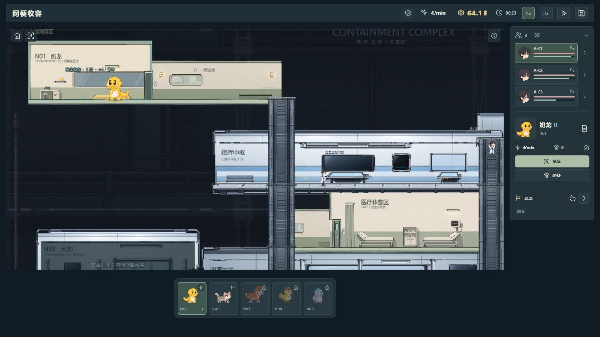
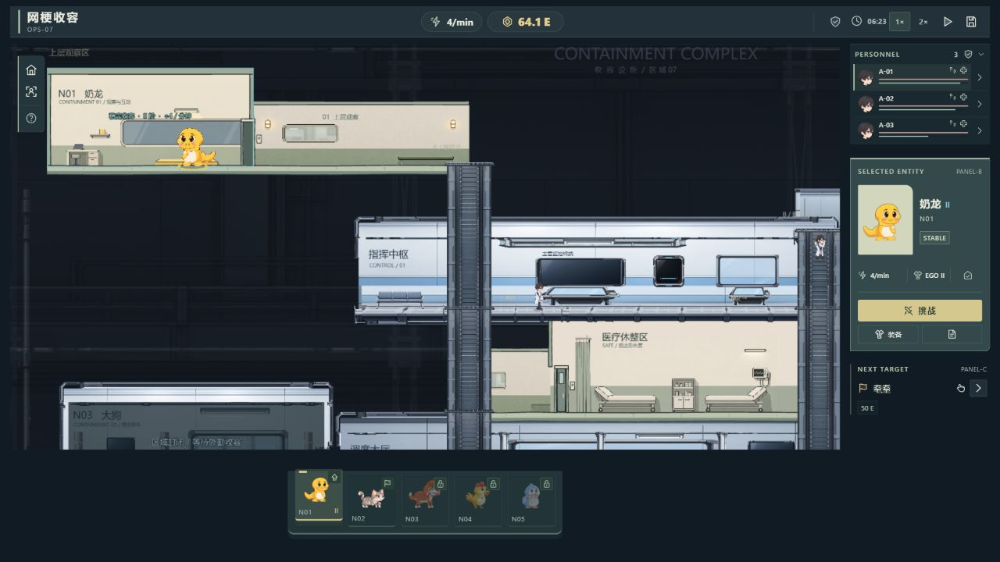
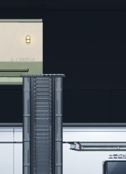

PERSONNEL
员工总览 · 轻条带
小头像、编号、HP / SP 细条和状态图标；用紧凑行距快速扫视小队，不与焦点对象争夺注意力。
沿用 v0.6 的图标与 Dock，将右侧信息区组织为员工条带、焦点主卡、目标芯片三个不同权重的段落。
同为 1280 × 720、整合镜头、N01 II、64.1 E、06:23 暂停、3 名员工。以下为真实浏览器运行截图，点击可查看原图。


截图按相同区域裁切：x=1085、y=56、宽183、高522。A / B / C 为截图外的说明标注，未覆盖或修改实机图。
左侧是原创语义 HTML 结构示意，用于解释信息分层；它不是游戏截图，也不参与游戏状态或结算。右侧另附真实主卡截图。

以下为独立 HTML 组件样板，展示区头、状态章、条件标签与编号。配色延续灰绿底色，按钮采用克制的暖米色。
区头组织信息，不作为高亮大标题。
稳定收容 / 可抓捕 / 条件未满足。
短条件与指标，详细解释留在提示中。
顶栏轻编号与 PANEL-B / PANEL-C 形成机构索引语言。
本轮目标是建立层级，不再次强制削减文字。必要的分区索引和状态章可以增加条目；判断依据是内容是否更短、更聚焦，以及功能是否仍能找到。
| 相同统计口径 | v0.6 基线 | v0.7 最终 |
|---|---|---|
| 常驻文本条目 | 25 | 32（+7） |
| 常驻文本字符 | 78 | 143（+65） |
统计主界面可见 DOM 文本；排除 toast、modal、闭合 details、tooltip 与 canvas。基线原始记录 · 最终原始记录。本页未用结构示意或截图中的画布文字充当 DOM 统计。
本轮文本没有变少：新增的 7 条为 OPS-07、PERSONNEL、SELECTED ENTITY、PANEL-B、STABLE、NEXT TARGET、PANEL-C；E.G.O. 指标增加 EGO 前缀，共增加 65 个字符。增加的是组织索引与状态标签，原有操作、数值和短标签保留，没有增加大段常驻说明。
资源、产能、时间与暂停/保存保留在顶栏；员工状态与详情、当前对象操作、下一目标和五物 Dock 保留入口。装备、档案和条件解释通过原有二级页面及提示查看。